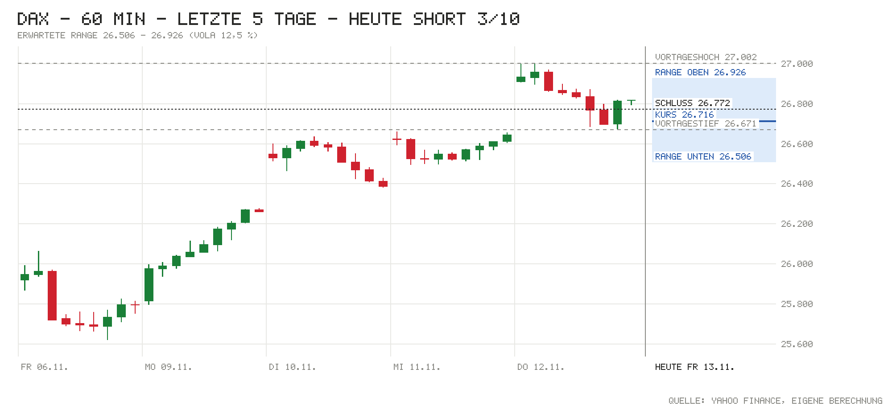

Tagesentscheidung ab 09:05 bis 17:30 Uhr
Nach einer Woche mit rund +3,5 % und dem ersten Sprung über 27.000 fehlt heute der Nachschub: Die US-Renditen steigen weiter (10J 5,12 %), die Fed-Erhöhung im Dezember ist voll eingepreist, China und Hongkong schlossen schwach (Hang Seng −1,66 %) und die Indikation liegt mit 26.716 leicht unter dem Vortagesschluss. Das wichtigste Gegenargument ist der intakte Aufwärtstrend: Der DAX notiert weit über allen Durchschnitten, der große Trend ist Bull. Darum nur 3/10.
- Kurs um 09:05
- 26.716
- Erwartete Range
- 26.506 – 26.926
- Eingepreist (Tagesoption)
- ±0,79 %
Einschätzung vom Kurs um 09:05 (Median der Indikationen L&S, J.P. Morgan, UBS) bis zum Xetra-Schluss. Range = ±1 σ für die restliche Handelszeit aus der DAX-Tagesoption (ca. 68 %). Keine Anlageberatung.
Chart

Signale
| Signal | Wirkung | Stand und Einordnung |
|---|---|---|
| Vorgaben USA | Gegenwind | Donnerstag: S&P 500 −0,35 %, Nasdaq 100 −0,30 %, Dow −0,36 % nach dem Rücktritt von Nvidia-Chef Jensen Huang. Futures jetzt: S&P −0,01 %, Nasdaq −0,12 % – keine Erholung. |
| Eröffnung & erste Minuten | Gegenwind | Indikation 26.716 (−0,21 % zum Xetra-Schluss 26.771,88). Gestern Hoch 27.001,67, Schluss klar darunter. Eröffnung und Hoch/Tief heute zum Abruf noch n/v. |
| Asien & China | Gegenwind | Nikkei +0,53 %, aber Shanghai −0,59 %, CSI 300 −0,68 %, Hang Seng −1,66 %. |
| Datenüberraschungen | Neutral | US-Erstanträge (12.11.) 200K vs. Prognose 194K; der heiße CPI vom 10.11. (Kern +0,3 % vs. 0,2 %) wirkt nach. Deutsche Großhandelspreise (8:00) zum Abruf ohne Ist-Wert. |
| Zinserwartung | Gegenwind | Fed 09.12.: 113 % für +25 Bp., Januar 69 % für eine weitere Erhöhung. EZB-Einlagensatz 2,50 %. |
| Renditen | Gegenwind | US 10J 5,12 % live (+2 Bp.; offiziell +26 Bp. in einer Woche), Bund 10J 3,36 % (+3 Bp.). |
| Kreditstress | Gegenwind | FRED n/v; Ersatz: HYG −0,48 %, LQD −0,88 % – Anleihen unter Druck, kein akuter Stress. |
| Öl & Dollar | Neutral | Brent 95,65 USD (−0,18 %) bleibt hoch; EUR/USD 1,1062 (−0,30 %) – der schwache Euro hilft Exporteuren. |
| Trend | Gegenwind | Weit über 21-T. (25.851), 50-T. (25.595) und 200-T.-Schnitt (24.963). Großer Trend Bull seit 11.11. – spricht gegen Short. |
| Positionierung | Neutral | COT 03.11.: Hedgefonds im S&P-Future netto −372.318 (+28.286), Asset Manager +928.584. Kein Extrem. |
| Unternehmensnachrichten | Neutral | Ruhiger Tag bei den Schwergewichten. RWE/E.ON: Bund erwägt laut „Welt“ Kauf ihrer Urenco-Anteile (leicht positiv). |
| Profi-Sicht | Gegenwind | ING: wieder taktisch bearish für Anleihen (höhere Renditen), Dollar bleibt kurzfristig stark. |
| Termine bis 17:30 | Neutral | Eurozone-BIP 11:00, US-Erzeugerpreise 14:30 (können die Inflationssorge nähren), Fed-Redner Collins, Logan, Bowman; Nagel 17:00. |
Großer Trend (3-Monats-Momentum)
- Stand
- Bull
- Seit
- 11.11. (6 Wechsel in 3 Monaten)
- Schluss 12.11.
- +1,65 % vs. Zins +0,60 %
- Heute dreht es bei Schluss unter
- 26.286 (jetzt −1,6 %)
Mit der Indikation von 26.716 bleibt das Signal Bull; erst ein Rutsch um rund 1,6 % bis zum Schluss würde es drehen – außerhalb der erwarteten Range. Bull = Rendite der letzten 3 Monate über dem Geldmarktzins, Bear = darunter. Regel: Rendite der letzten 63 Handelstage (≈ 3 Monate) gegen den EZB-Einlagensatz, jeden Tag zum Schluss neu entschieden, Zeitrahmen Tageskerzen (nach Antonacci 2014, dort monatlich über 12 Monate; täglich entschieden dreht es öfter falsch). Keine Anlageberatung.
Bilanz von gestern
12.11.: Long 3/10 – Richtung falsch, −117 Punkte (Kurs zur Notiz 26.889, Schluss 26.772, Hoch 27.002, Tief 26.671). Range ±236 um den Kurs zur Notiz getroffen (Bewegung −117); bisher 71 % von 7 Tagen getroffen (Soll ca. 68 %). Gesamt seit Start: 7 Einschätzungen, Richtung richtig 29 %, Summe −585 Punkte bis Schluss (Schnitt −84).
Marktlage
| Markt | Stand | Veränderung |
|---|---|---|
| DAX (Schluss 12.11.) | 26.771,88 | +0,41 % |
| DAX (Eröffnung heute) | n/v | n/v |
| DAX (jetzt, Kurs zur Notiz 09:05) | 26.716 | −0,21 % |
| S&P 500 (Schluss 12.11.) | 7.592,40 | −0,35 % |
| Nasdaq 100 (Schluss 12.11.) | 28.289,19 | −0,30 % |
| Dow Jones (Schluss 12.11.) | 52.297,09 | −0,36 % |
| US-Futures (S&P / Nasdaq) | 7.614,75 / 28.349,50 | −0,01 % / −0,12 % |
| Nikkei 225 | Eröffnung 61.223 → Schluss 61.142 | +0,53 % |
| Shanghai Composite | Eröffnung 3.659 → Schluss 3.634 | −0,59 % |
| CSI 300 | Eröffnung 4.048 → Schluss 4.016 | −0,68 % |
| Hang Seng | Eröffnung 23.872 → aktuell 23.609 | −1,66 % |
| EUR/USD | 1,1062 | −0,30 % |
| Brent (USD/Barrel) | 95,65 | −0,18 % |
| Gold (USD/Unze) | 3.905,00 | +0,51 % |
| VIX (Schluss 12.11.) | 18,70 | +6,92 % |
China: Festland und Hongkong schwächer; einen eigenen Auslöser fanden wir nicht – naheliegend sind die schwache Wall Street, Tech-Unsicherheit nach dem Nvidia-Chefwechsel und der starke Dollar (eigene Einordnung). Kreditdaten aus China folgen um 10:00. Farben bei Brent und VIX nach Wirkung auf Aktien. DAX-Eröffnung lag zum Datenabruf (Yahoo, bis 15 min verzögert) noch nicht vor.
Anleihen & Zinsen
| Markt | Stand | Veränderung |
|---|---|---|
| Bund 2J | 3,13 % | +5 Bp. (vs. Bundesbank 12.11.: 3,08 %) |
| Bund 10J | 3,36 % | +3 Bp. |
| US-Treasury 2J | 4,86 % (live und offiziell 12.11.) | n/v |
| US-Treasury 10J | 5,12 % (live) | +2 Bp.; 1 Woche (offiziell): +26 Bp. |
| Fed, Sitzung 09.12. | Erhöhung um 25 Bp. erwartet | 113 % (Rest: Chance auf 50 Bp.); Jan. 69 % |
| EZB-Einlagensatz | 2,50 % | zuletzt +25 Bp. (16.09.) |
| Euro-Hochzins-Aufschlag | n/v (FRED) | n/v |
| US-Hochzins (Ersatz: HYG) | 76,98 USD | −0,48 % (Tag) |
Termine heute
- 08:00 Deutschland: Großhandelspreise Oktober – Prognose +0,4 % m/m · zuvor +1,9 %; Ist zum Abruf n/v
- 08:45 Frankreich: Verbraucherpreise (final) – Prognose +3,4 % J/J · zuvor 3,1 %
- 10:00 China: Neue Kredite – Prognose 80 Mrd. · zuvor 1.080 Mrd. CNY; M2 Prognose 7,2 %
- 11:00 Eurozone: BIP Q3 (2. Schätzung) – Prognose +0,4 % q/q / +1,3 % J/J; Beschäftigung, Handelsbilanz
- 14:30 USA: Erzeugerpreise Oktober – Prognose +0,4 % m/m (zuvor +1,3 %), Kern +0,3 % (zuvor +0,7 %)
- 15:10 Fed: Collins, 15:40 Logan, 16:50 Bowman; 17:00 Bundesbank-Präsident Nagel; 18:00 Daly
Nachrichten zu DAX-Werten
- RWE / E.ON: Laut „Welt“ erwägt der Bund den Kauf ihres gemeinsamen Drittels am Urananreicherer Urenco; ein Marktbeobachter sieht Wertsteigerung und stärkere Bilanzen. Einschätzung: leicht positiv für beide.
- Nvidia-Chefwechsel (Umfeld): Jensen Huang ist zurückgetreten; die US-Tech-Werte steckten das gestern weitgehend weg (Nasdaq 100 −0,30 %). Einschätzung: für SAP und Infineon heute eher Unsicherheit als Belastung.
- Außerhalb des DAX: CTS Eventim −5 % (Tradegate) nach schwächerem Q3, Bechtle +0,8 % (Ziele bestätigt), Hugo Boss: Frasers ersetzt Chef Grieder durch David Epstein ab 2027. Einschätzung: ohne Wirkung auf den DAX.
Profi-Sicht & Positionierung
- ING THINK: Nach der heißen US-Inflation und der falkenhaften Fed (Erhöhungen im Dezember und Januar eingepreist) bleibt der Dollar kurzfristig gestützt, EUR/USD droht unter 1,10 zu fallen (FX Daily). Bei Zinsen ist ING wieder taktisch bearish – nur ein Rückschlag im KI-Sektor (Anthropic-Börsengang, Nvidia-Zahlen) könnte die Renditen drücken (Rates Spark).
- Positionierung (COT, Stand 03.11.): Hedgefonds im S&P-Future netto −372.318 (+28.286), Asset Manager +928.584 (+5.135); Treasuries: Hedgefonds bauen Short aus (−35.035). Kein Extrem.
Quellen
- Marktdaten per Skript: Amber Terminal / Yahoo Finance (Kurse, Futures, HYG/LQD), onvista (Indikationen, VDAX), Eurex (DAX-Tagesoption ODAP), Nasdaq (Kalender), CNBC / Bundesbank / US-Treasury (Renditen), CFTC (COT), ING THINK; FRED (Kreditaufschläge) nicht erreichbar
- onvista/dpa-AFX: Aktien Frankfurt Ausblick – Leichte Verluste nach Rekorden erwartet
- onvista/dpa-AFX: DAX-FLASH – Leichtes Minus nach Rekordhoch, starke Wochenbilanz
- ING THINK: FX Daily – Don’t mess with the dollar near term
- ING THINK: Rates Spark – Higher rates amid a fragile calm